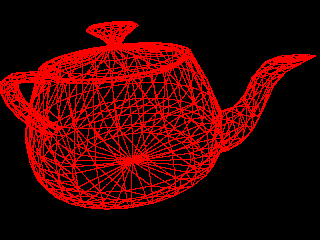
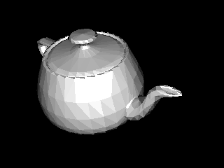

COS426 Assignment 3b — Rasterizer
Switch to: Interactive Renderer
Features Implemented:
- (2.0) Perspective Projection
- (1.0) Phong Reflection Model
- (0.5) Bounding Box
- (1.0) Barycentric Coordinates
- (2.0) Flat Shader
- (2.0) Gouraud Shader
- (2.0) Phong Shader
- (2.0) Diffuse Mapping
- (0.5) Specular Mapping
- (2.0) XYZ Normal Mapping
- (1.0) Performance Contest
- (1.0) Art Contest
Perspective Projection
We used the THREE.js function applyMatrix4() to multiply the vertices by the view matrix and then normalized the xyz values by dividing it by the projected w value (prevents us from needing to divide z' by w later on). Afterwards, we used the scaling from projectVerticesNaive() to move x/y appropriately.
Camera=[0.87426,1.2424,-1.7623];[0.049093,-0.90189,-0.42917];[0.20518,0.28039,0.18285]&Mesh=teapot.obj;false&Resolution=320x240&Shading_Model=Wire&Ambient=[0,0,0]&Diffuse=[255,255,255]&Specular=[255,255,255]&Shininess=5

Phong Reflection Model
(Your description of your implentation of Phong Reflection Model goes here...)
Bounding Box
For the bounding box, first set the first x/y values to be the mins, and then we iterated through the projected vertices, comparing each x/y of the projected vertices with the current mins/maxes and then setting them to the floors/ceils (rounding for pixels), respectively, when appropriate. Later on, when we iterate through the bounding box (using our barycentric coordinates function to check whether points are inside the triangle or not), we cap the iterations to fit within the image in case any bounding boxes go outside of it.
Barycentric Coordinates
(Your description of your implentation of Barycentric Coordinates goes here...)
Flat Shader
We found the weighted averages of the vertices' normals and positions by adding and dividing to get the face normal and centroid, respectively. Then, we passed these values into the phongReflectionModel() to get the color by face, setting each pixel that passes the z-buffer test as that color within the triangle.
Camera=[1.6042,2.0914,-1.276];[0.39444,-0.74169,-0.5425];[0.20518,0.28039,0.18285]&Mesh=teapot.obj;false&Resolution=320x240&Shading_Model=Flat&Ambient=[0,0,0]&Diffuse=[255,255,255]&Specular=[255,255,255]&Shininess=5

Gouraud Shader
We found the color of each vertex of the triangle separately by iterating through the verts, and then used the barycentric coordinates to get a weighted average for the color of each point within the triangle (if it passes the z-buffer).
Camera=[1.6042,2.0914,-1.276];[0.39444,-0.74169,-0.5425];[0.20518,0.28039,0.18285]&Mesh=teapot.obj;false&Resolution=320x240&Shading_Model=Gouraud&Ambient=[0,0,0]&Diffuse=[255,255,255]&Specular=[255,255,255]&Shininess=5
Phong Shader
For each point within the triangle, we interpolated the point's vertex position and normal using barycentric coordinates to weight verts and normals, respectively. After that, we called phongReflectionModel() with these new values and set pixels that pass to it.
Camera=[1.6042,2.0914,-1.276];[0.39444,-0.74169,-0.5425];[0.20518,0.28039,0.18285]&Mesh=teapot.obj;false&Resolution=320x240&Shading_Model=Phong&Ambient=[0,0,0]&Diffuse=[255,255,255]&Specular=[255,255,255]&Shininess=5
Diffuse Mapping
Per Piazza, it appears that getPhongMaterial() already took care of most of this, so we only needed to calculated the uv coordinates, which we did by interpolating the new uv.x and uv.y coordinates using the barycentric coordinates to get a weighted average of the original uv values of the vertices (when available) for each pixel within the triangle. When uvs weren't available, we opted to calculate phongMaterial/color(s) outside of the pixel setting for the flat and Gouraud shdaers to save time.
Specular Mapping
Same as diffuse.
XYZ Normal Mapping
(Your description of your implentation of XYZ Normal Mapping goes here...)
You can include as many results as you want, but please at least include the following results:
Camera=[0.90192,0.43051,1.6286];[0.21,-0.9677,0.1395];[0,0,0]&Mesh=afrhead.obj;true&Mesh=afreye.obj;true&Resolution=320x240&Shading_Model=Phong&Ambient=[0,0,0]&Diffuse=[255,255,255]&Specular=[255,255,255]&Shininess=5

Performance Contest
To optimize performance, we set up checks for whether the uvs were defined or not before entering and calculating pixel colors per point in the triangle. For flat and Gouraud shader, this should save time, since it means that we do not have to calculate a unique phongMaterial (because no unique uvs when undefined) for each pixel, rather, we get to only calculate the face's or vertices' color once per triangle, respectively. In addition, we check whether barycentric coordinates are defined to decide whether to even do the z-buffer check, and only after it passes both of these checks do we execute the rest of the needed shading functions, which should save a bit of calculation.
Art Contest
(Your description of your implentation of Art Contest goes here...)
You can include as many results as you want, but please at least include the following results: